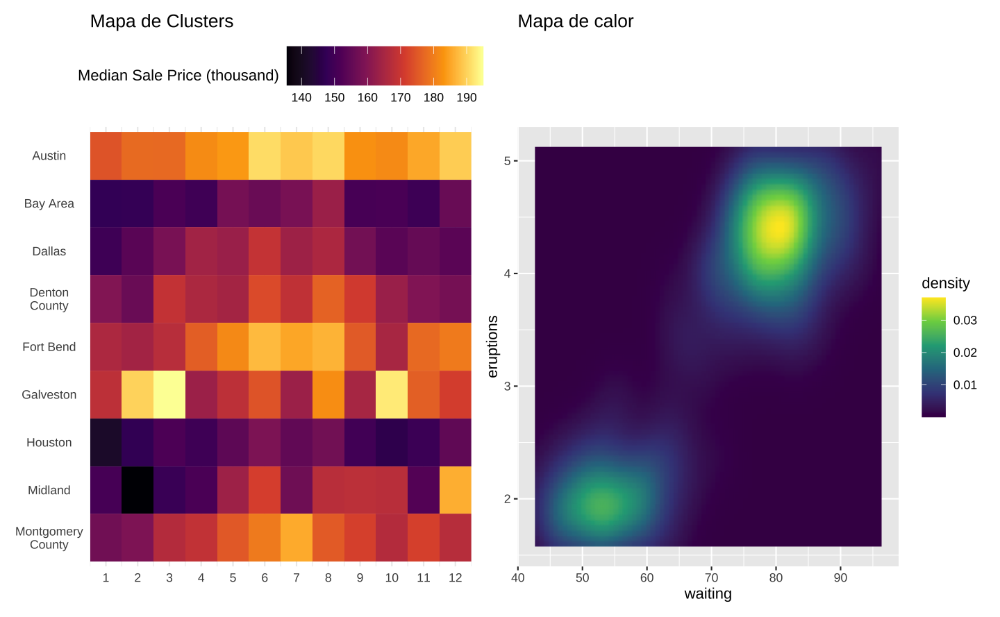
Graficos ou mapas de calor
Mapas de calor apresentam a variação de uma variável num plano bidimensional. Há dois tipos principais de mapas de calor: o mapa de calor espacial e o mapa de calor de clusters. O primeiro tipicamente é superimposto sobre um mapa e representa a intensidade de alguma variável, como a pluviosidade, temperatura, concentração de C02 e assim por diante. Já o mapa de calor de clusters é disposto numa matriz bidimensional para sugerir padrões, tendências, ou mesmo para visualizar a evolução de uma variável num grupo de classes.
O pacote ggplot2 não tem uma função única para montar mapas de calor, então vamos explorar uma abordagem simples focada na função geom_tile(). Contudo, é possível montar mapas de calor também com as funções geom_bin_2d(), geom_density_2d(), geom_raster() ou geom_hex().
Neste post vamos nos focar em mapas de clusters. A discussão de mapas de calor será apresentada no post subsequente que trata sobre mapas.
O código abaixo carrega os pacotes necessários. Para a paleta de cores vou utilizar o pacote MetBrewer, que oferece algumas paletas de cores interessantes, inspiradas em artistas famosos do Metropolitan Museum de NY. O pacote pwt10 carrega a base de dados da Penn World Table que traz uma série de informações socioeconômicas dos países ao longo dos anos. Por fim, os pacotes astsa, wooldridge e GetBCBData são utilizados para conseguir acesso a base de dados para os exemplos.
# Para instalar um pacote do GitHub
remotes::install_github("BlakeRMills/MetBrewer")# Carrega os pacotes
library(dplyr)
library(tidyr)
library(forcats)
library(stringr)
library(ggplot2)
# Paletas de cores (ver acima como instalar)
library(MetBrewer)
# Para carregar bases de dados para os exemplos
# Dados da Penn World Table
library(pwt10)
# Aquecimento global
library(astsa)
# Séries do Banco Central do Brasil
library(GetBCBData)
# Preços de imóveis
library(wooldridge)
# Colors
colors_hiroshige <- met.brewer(name = "Hiroshige")Gráfico de calor (clusters)
Exemplo: Crescimento Econômico
Primeiro vamos importar a base de dados da Penn World Table usando o pacote pwt10.
# A base de dados
pwt <- as_tibble(pwt10::pwt10.0)A base tem várias colunas mas vamos nos focar somente nas colunas country, pop (população do país em milhões de habitante) e rgdpe, que o é o PIB (pela ótica da despesa) em milhões de US$ constantes (2017).
| country | isocode | year | currency | rgdpe | rgdpo | pop | emp | avh | hc | ccon | cda | cgdpe | cgdpo | cn | ck | ctfp | cwtfp | rgdpna | rconna | rdana | rnna | rkna | rtfpna | rwtfpna | labsh | irr | delta | xr | pl_con | pl_da | pl_gdpo | i_cig | i_xm | i_xr | i_outlier | i_irr | cor_exp | statcap | csh_c | csh_i | csh_g | csh_x | csh_m | csh_r | pl_c | pl_i | pl_g | pl_x | pl_m | pl_n | pl_k |
|---|---|---|---|---|---|---|---|---|---|---|---|---|---|---|---|---|---|---|---|---|---|---|---|---|---|---|---|---|---|---|---|---|---|---|---|---|---|---|---|---|---|---|---|---|---|---|---|---|---|---|---|
| Brazil | BRA | 1950 | Brazilian Real | 92711 | 89223 | 53 | 17 | 2042 | 1 | 67102 | 83933 | 87798 | 85324 | 227373 | NA | NA | NA | 145828 | 108970 | 144486 | 608567 | NA | NA | NA | 1 | 0 | 0 | 0 | 0 | 0 | 0 | extrapolated | extrapolated | market | no | regular | NA | NA | 1 | 0 | 0 | 0 | 0 | 0 | 0 | 0 | 0 | 0 | 0 | 0 | NA |
| Brazil | BRA | 1951 | Brazilian Real | 96889 | 91904 | 55 | 17 | 2051 | 1 | 70038 | 91417 | 92312 | 87631 | 242814 | NA | NA | NA | 152969 | 113887 | 155273 | 654280 | NA | NA | NA | 1 | 0 | 0 | 0 | 0 | 0 | 0 | extrapolated | extrapolated | market | no | regular | NA | NA | 1 | 0 | 0 | 0 | 0 | 0 | 0 | 0 | 0 | 0 | 0 | 0 | NA |
| Brazil | BRA | 1952 | Brazilian Real | 105943 | 101667 | 56 | 18 | 2060 | 1 | 76213 | 100796 | 101407 | 97895 | 261085 | NA | NA | NA | 167515 | 123881 | 170169 | 705852 | NA | NA | NA | 1 | 0 | 0 | 0 | 0 | 0 | 0 | extrapolated | extrapolated | market | no | regular | NA | NA | 1 | 0 | 0 | 0 | 0 | 0 | 0 | 0 | 0 | 0 | 0 | 0 | NA |
| Brazil | BRA | 1953 | Brazilian Real | 108931 | 105003 | 58 | 18 | 2069 | 1 | 80936 | 100441 | 104321 | 101629 | 272078 | NA | NA | NA | 176028 | 130481 | 171026 | 737951 | NA | NA | NA | 1 | 0 | 0 | 0 | 0 | 0 | 0 | extrapolated | extrapolated | market | no | regular | NA | NA | 1 | 0 | 0 | 0 | 0 | 0 | 0 | 0 | 0 | 0 | 0 | 0 | NA |
| Brazil | BRA | 1954 | Brazilian Real | 118686 | 113983 | 60 | 19 | 2078 | 1 | 88946 | 111934 | 113384 | 110080 | 287037 | 0 | 1 | 1 | 190468 | 143957 | 191257 | 780613 | 0 | 1 | 1 | 1 | 0 | 0 | 0 | 0 | 0 | 0 | extrapolated | extrapolated | market | no | regular | NA | NA | 1 | 0 | 0 | 0 | 0 | 0 | 0 | 0 | 0 | 0 | 0 | 0 | 3 |
| Brazil | BRA | 1955 | Brazilian Real | 127384 | 122678 | 61 | 20 | 2087 | 1 | 94400 | 117254 | 121279 | 118126 | 301169 | 0 | 1 | 1 | 202763 | 153006 | 201258 | 820627 | 0 | 1 | 1 | 1 | 0 | 0 | 0 | 0 | 0 | 0 | extrapolated | extrapolated | market | no | regular | NA | NA | 1 | 0 | 0 | 0 | 0 | 0 | 0 | 0 | 0 | 0 | 0 | 0 | 2 |
| Brazil | BRA | 1956 | Brazilian Real | 131865 | 127205 | 63 | 20 | 2097 | 1 | 97827 | 119971 | 125158 | 122067 | 313178 | 0 | 1 | 1 | 210124 | 159465 | 206719 | 854692 | 0 | 1 | 1 | 1 | 0 | 0 | 0 | 0 | 0 | 0 | extrapolated | extrapolated | market | no | regular | NA | NA | 1 | 0 | 0 | 0 | 0 | 0 | 0 | 0 | 0 | 0 | 0 | 0 | 2 |
| Brazil | BRA | 1957 | Brazilian Real | 143384 | 138373 | 65 | 21 | 2106 | 1 | 104123 | 133653 | 136122 | 132684 | 332711 | 0 | 1 | 1 | 231221 | 170139 | 228611 | 911217 | 0 | 1 | 1 | 1 | 0 | 0 | 0 | 0 | 0 | 0 | extrapolated | extrapolated | market | no | regular | NA | NA | 1 | 0 | 0 | 0 | 0 | 0 | 0 | 0 | 0 | 0 | 0 | 0 | 2 |
| Brazil | BRA | 1958 | Brazilian Real | 151546 | 146430 | 67 | 21 | 2115 | 1 | 113085 | 142400 | 144065 | 141124 | 350683 | 0 | 1 | 1 | 245978 | 184877 | 244075 | 963159 | 0 | 1 | 1 | 1 | 0 | 0 | 0 | 0 | 0 | 0 | extrapolated | extrapolated | market | no | regular | NA | NA | 1 | 0 | 0 | 0 | 0 | 0 | 0 | 0 | 0 | 0 | 0 | 0 | 2 |
| Brazil | BRA | 1959 | Brazilian Real | 158732 | 153143 | 69 | 22 | 2125 | 1 | 116669 | 152878 | 150332 | 147218 | 376789 | 0 | 1 | 1 | 264945 | 191877 | 262297 | 1033868 | 0 | 1 | 1 | 1 | 0 | 0 | 0 | 0 | 0 | 0 | extrapolated | extrapolated | market | no | regular | NA | NA | 1 | 0 | 0 | 0 | 0 | 0 | 0 | 0 | 0 | 0 | 0 | 0 | 2 |
Vamos selecionar apenas os principais países da América Latina para montar nossa visualização.
O primeiro painel que iremos explorar vai exibir os ciclos de expansão e de recessão nos países latino-americanos ao longo dos anos, desde 1950. Para isto vamos primeiro calcular o PIB per capital real de cada país e depois criar uma variável dummy que indica com o valor 1 se o país teve crescimento do PIB per capita real e 0 caso contrário.
Code
# Vetor com países
latam_countries <- c(
"ARG",
"BOL",
"BRA",
"CHL",
"COL",
"CUB",
"DOM",
"ECU",
"GTM",
"HND",
"HTI",
"MEX",
"PER",
"VEN"
)
latam <- pwt |>
# Filtra apenas as linhas dos países selecionados
filter(isocode %in% latam_countries) |>
# Agrupa por país
group_by(country) |>
mutate(
# Calcula o PIB per capita de cada país
gdppc = rgdpe / pop,
# Calcula a variação do PIB per capita de cada país
d_gdppc = gdppc / lag(gdppc) - 1,
# Cria uma variável binária para indicar se houve crescimento
growth = factor(if_else(d_gdppc > 0, 1L, 0L)),
# Remove parêntesis e o texto dentro dele
country = str_remove(country, " \\(.+\\)"),
# Abrevia o nome da República Dominicana
country = str_replace(country, "Dominican Republic", "Dominican Rep.")
) |>
ungroup()Gráfico de Calor
Apesar de bidimensional, um heatmap serve para representar dados em três dimensões. No nosso caso, a função geom_tile() mapeia as variáveis x e y nas coordenadas enquanto a variável fill representa uma variável numérica adicional, seja ela categórica ou contínua.
O código abaixo monta um heatmap simples. No gráfico, os anos de crescimento e de recessão são destacados em cada país.
ggplot(data = latam, aes(x = year, y = country)) +
geom_tile(aes(fill = growth))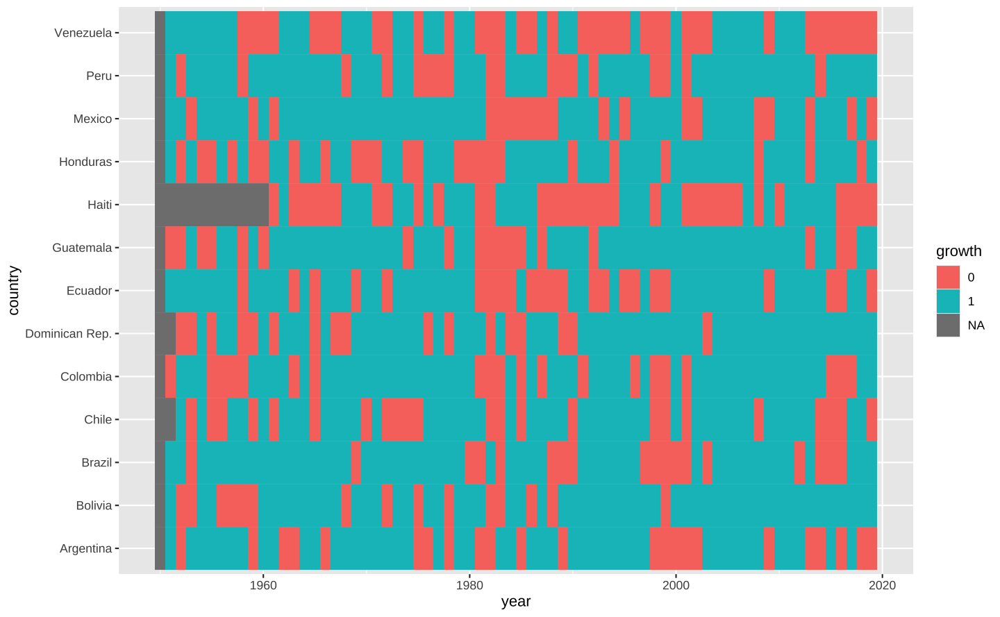
O gráfico acima é bastante interessante, mas pode ser melhorado em diversos aspectos. Vamos implementar as melhorias sequencialmente.
Reordenar as colunas
Note que os países no gráfico acima estão organizados de forma alfabética, mas a ordem está invertida. Para alterar a ordem de uma variável categórica temos que alterar os seus níveis. No R variáveis categóricas tem uma classe especial factor e seus níveis são definidos pelo argumento levels.
Tipicamente, isto envolve definir um vetor com a ordem dos níveis e criar uma variável nova como no exemplo abaixo.
# Vetor com o nome de todos os países latino-americanos
lvls <- unique(latam[["country"]])
# Inverte a ordem do vetor
lvls <- rev(lvls)
# Redefine os níveis da variável country
latam <- latam |>
mutate(country = factor(country, levels = lvls))Há, contudo, vários atalhos para melhor lidar com factors. Em particular, o pacote forcats carregado junto no tidyverse tem uma série de funções que facilitam o trato de variáveis categóricas. A função fct_rev(), por exemplo, serve para inverter a ordem de uma variável categórica.
Assim, o código abaixo chega no mesmo resultado.
# Inverte a ordem da variável country
latam <- latam |>
mutate(country = fct_rev(country))Note que o gráfico está em ordem alfabética, começando na Argentina e terminando na Venezuela.
# Monta o gráfico
ggplot(data = latam, aes(x = year, y = country)) +
geom_tile(aes(fill = growth))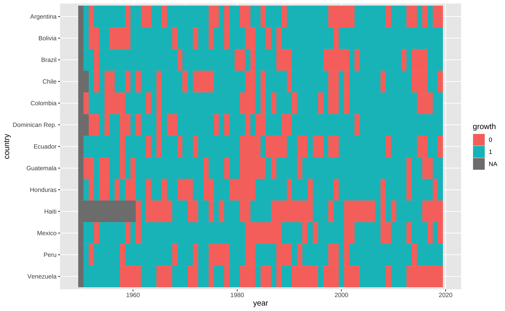
Dimensionar o gráfico
Podemos inserir um pouco de espaço entre as séries de cada país alterando o argumento height da função geom_tile().
ggplot(data = latam, aes(x = year, y = country)) +
geom_tile(aes(fill = growth), height = 0.9)Alterar as cores
A escolha do esquema de cores é talvez o aspecto mais importante de um heat map. Não é fácil encontrar boas cores que sejam intuitivas e que também sejam inclusivas. Aqui utilizamos uma paleta inspirada no artista plástico Hiroshige Utagawa para conseguir alguns tons de azul/vermelho para representar os anos de expansão/recessão.
# Colors
colors_hiroshige <- met.brewer(name = "Hiroshige")
colors_binary <- colors_hiroshige[c(1, 8)]
p <- ggplot(data = latam, aes(x = year, y = country)) +
geom_tile(aes(fill = growth), height = 0.9) +
# Altera a paleta de cores e controla a legenda
scale_fill_manual(
# Título da legenda (opcional)
name = "",
# Paleta de cores
values = colors_binary,
# Nome das classes na legenda
labels = c("Recession", "Growth"),
# Omite o grupo NA
na.translate = FALSE
)
p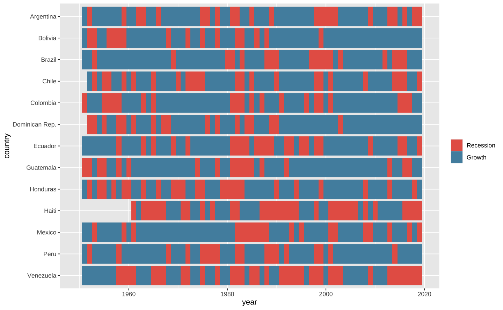
Ajustar e duplicar o eixo
A leitura dos anos no gráfico acima pode ser melhorada. Primeiro, vamos inserir mais quebras no eixo-x e sinalizar que a série tem início em 1951 e tem fim em 2019. Para ajustar o eixo usamos a função scale_x_continuous() variando o argumento breaks.
Quando temos um gráfico grande, pode ser útil duplicar os eixos para facilitar a sua leitura. Vamos duplicar o eixo-x (anos) usando sec.axis = dup_axis().
Por fim, note que há espaço ocioso tanto no lado esquerdo como no lado direito do gráfico (espaço entre os “tiles” e a borda do painel do gráfico). O argumento expand = c(0, 0) remove o espaço entre as barras e o limite do painel.
latam_na <- latam |>
filter(!is.na(growth))
p <- p +
# Controla o eixo-x (anos)
scale_x_continuous(
# Define as quebras do gráfico
breaks = c(1951, seq(1960, 2010, 10), 2019),
# Preenche 100% do painel
expand = c(0, 0),
# Duplica o eixo
sec.axis = dup_axis()
)
p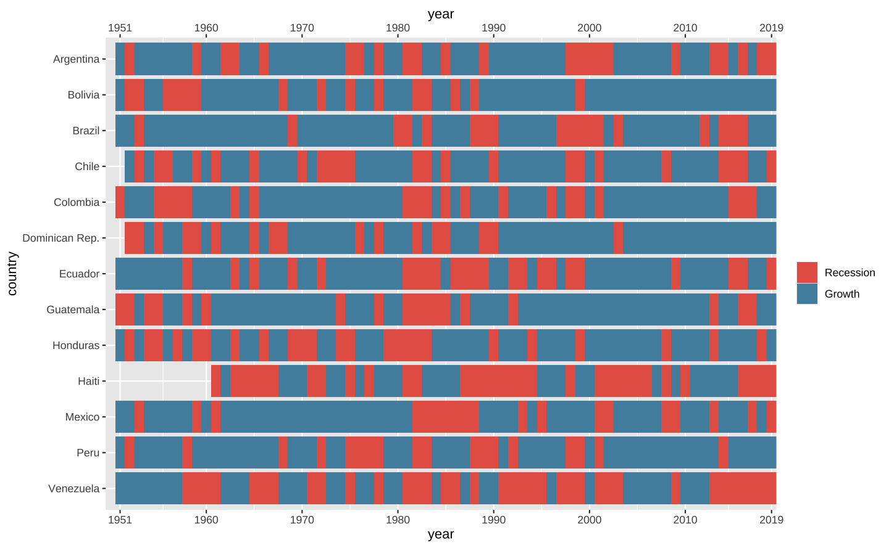
Ajustar o tema
Os ajustes finos de um gráfico são feitos com a função theme(). Neste caso, queremos um gráfico com poucos elementos. Uma abordagem simples para modificar os detalhes do gráfico é inicar com um template, um tema padrão. Neste caso, começamos como um tema chamado theme_minimal().
p <- p +
# Tema minimalista que serve de template
theme_minimal() +
theme(
# Remove o título dos eixos x e y
axis.title = element_blank(),
# Remove as linhas horizontais e verticais no fundo do gráfico
panel.grid.major = element_blank(),
panel.grid.minor = element_blank(),
# Coloca a legenda acima do gráfico
legend.position = "top"
)
pAdicionar linhas de grade
As linhas de grade de um gráfico facilitam a interpretação dos dados, mas a função geom_tile() fica por cima delas. Podemos sobrepor linhas verticais no gráfico para sinalizar o início de cada uma das décadas.
O código abaixo faz isto com a função geom_vline() que serve para desenhar linhas verticais num gráfico com o argumento xintercept. O argumento linetype = 2 indica que a linha deve ser tracejada.
p <- p +
# Desenha linhas verticais no gráfico
geom_vline(
# Define a posição das linhas verticais
xintercept = c(1951, seq(1960, 2010, 10), 2019),
# Tipo de linha (2 = tracejado)
linetype = 2,
# Cor da linha
colour = "gray75"
)
p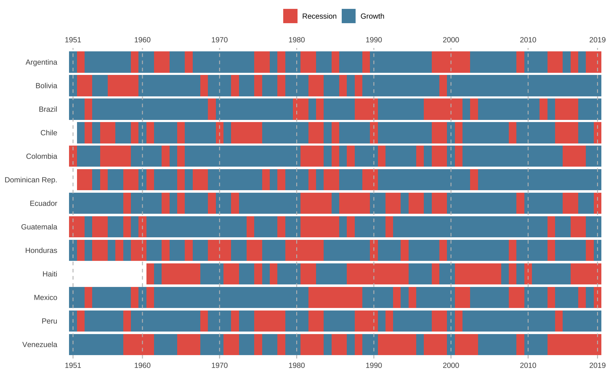
Ajustar o nome dos eixos
p <- p +
labs(
title = "Growth/Recession across Latin America",
subtitle = "Cycles are synchronized across countries. The 1980s was a difficult period for most countries, while the mid 2000s\nonwards was more positive overall due to the commodtiy boom.",
caption = "Source: Penn World Table (pwt10)"
)
p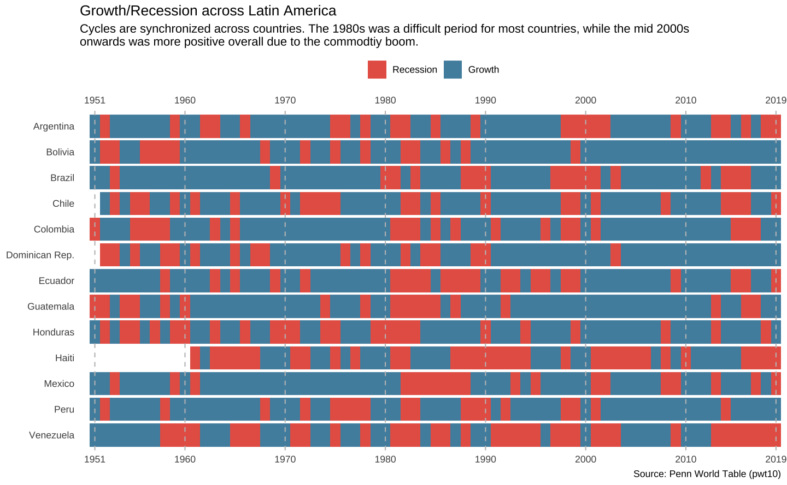
O gráfico final
O código abaixo gera o gráfico finalizado.
ggplot(data = latam, aes(x = year, y = country)) +
geom_tile(aes(fill = growth), height = 0.9) +
geom_vline(
xintercept = c(1951, seq(1960, 2010, 10), 2019),
linetype = 2,
colour = "gray75"
) +
scale_fill_manual(
name = "",
values = colors_binary,
labels = c("Recession", "Growth"),
na.translate = FALSE
) +
scale_x_continuous(
breaks = c(1951, seq(1960, 2010, 10), 2019),
expand = c(0, 0),
sec.axis = dup_axis()
) +
labs(
title = "Growth/Recession across Latin America",
subtitle = "Cycles are synchronized across countries. The 1980s was a difficult period for most countries, while the mid 2000s\nonwards was more positive due to the commodtiy boom.",
caption = "Source: Penn World Table (pwt10)"
) +
theme_minimal() +
theme(
axis.title = element_blank(),
panel.grid.major = element_blank(),
panel.grid.minor = element_blank(),
legend.position = "top"
)Usando variáveis contínuas
O exemplo acima mostra os ciclos de expansão e recessão usando uma simples variável binária. Este tipo de variável é também chamada de “discreta” (ou, às vezes, “contável”).
Pode-se adaptar o código acima para montar gráficos de calor para variáveis contínuas. Para evitar a repetição excessiva de código podemos criar uma função. Funções permitem que você automatize tarefas repetitivas; no fundo, evita que você tenha que ficar copiando e colando código.
Vou criar uma função simples que: (1) adiciona as linhas verticais tracejadas sempre nos mesmos anos; (2) ajusta e duplica o eixo-x do gráfico; e (3) aplica um tema padrão sobre o gráfico. O nome desta função será gg_heatmap() e o argumento da função será um gráfico “base” de ggplot2. Isto deve ficar mais compreensível após os exemplos.
O código abaixo mostra a implementação da função.
Funções
Code
# Cria um tema para os gráficos
theme_heatmap <- theme_minimal() +
theme(
axis.title = element_blank(),
panel.grid.major = element_blank(),
panel.grid.minor = element_blank(),
legend.position = "top",
legend.key.size = unit(1, "cm"),
legend.title = element_text(vjust = 0.75, hjust = 0.5)
)
gg_heatmap <- function(plot) {
plot <- plot +
# Desenha linhas verticais no gráfico
geom_vline(
# Define a posição das linhas verticais
xintercept = c(1951, seq(1960, 2010, 10), 2019),
# Tipo de linha (2 = tracejado)
linetype = 2,
# Cor da linha
colour = "gray75"
) +
# Controla o eixo-x (anos)
scale_x_continuous(
# Define as quebras do gráfico
breaks = c(seq(1950, 2010, 10), 2019),
# Preenche 100% do painel
expand = c(0, 0),
# Duplica o eixo
sec.axis = dup_axis()
) +
# Adiciona o tema
theme_heatmap
return(plot)
}PIB per capita
Como exemplo vamos olhar para o PIB per capita dos países da América Latina. Para melhorar a visualização uso os dados em escala logarítmica.
No código abaixo eu utilizo a função gg_heatmap() criada acima. Primeiro eu crio um gráfico de calor “base” usando apenas geom_tile() e modificando a escala de cor. Depois, aplico a função neste objeto e o resultado é o gráfico final.
# Monta o mapa
p <- ggplot(data = latam, aes(x = year, y = country)) +
geom_tile(aes(fill = log(gdppc)), height = 0.9) +
scale_fill_gradientn(
name = "PIB per capita (log)",
colours = met.brewer("Hokusai1")
)
# Aplica a função
gg_heatmap(p)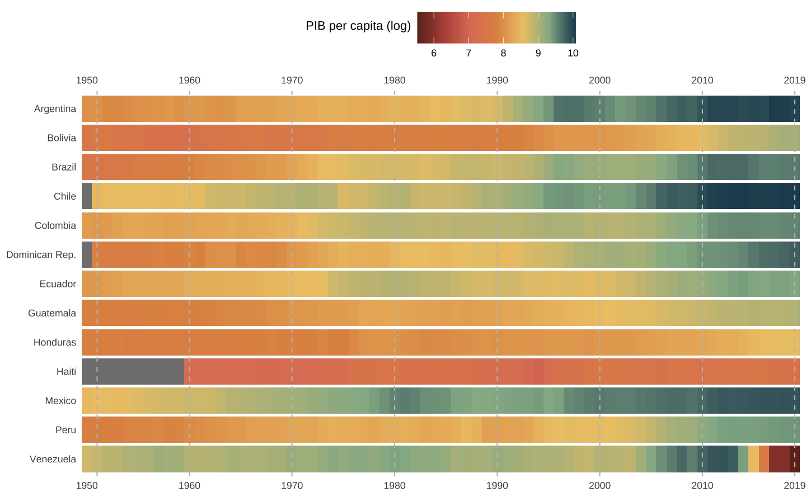
O gráfico de calor abaixo apresenta o PIB per capita em nível e com uma paleta de cores diferente. Note como o uso da função gg_heatmap() economiza muitas linhas de código.
p <- ggplot(data = latam, aes(x = year, y = country)) +
geom_tile(aes(fill = gdppc / 1000), height = 0.9) +
scale_fill_viridis_c(name = "PIB per capita (mil)")
gg_heatmap(p)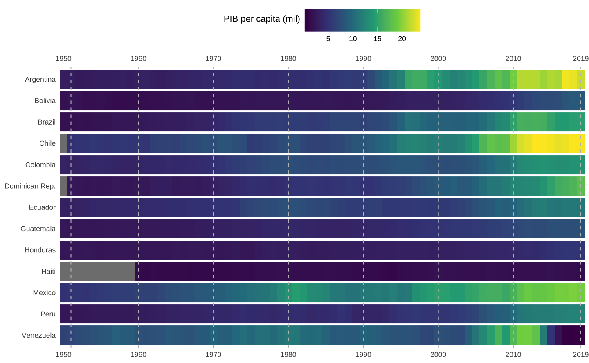
Inflação
Mapas de calor também podem servir para construir visualizações no formato de um “calendário de observações”. A visualização abaixo é adaptada do meu post Visualizando o IPCA e mostra o valor acumulado do IPCA em 12 meses a cada mês, desde janeiro de 2010. Os dados são importados do Banco Central do Brasil usando o pacote GetBCBData e uso o pacote lubridate para transformar os dados.
Code
#> Importa a série do IPCA a partir da API do Banco Central
ipca <- GetBCBData::gbcbd_get_series(
id = 433,
first.date = as.Date("2009-01-01")
)
#> Limpeza de dados
ipca <- ipca |>
mutate(
#> Cria uma coluna com o ano da observação
year = lubridate::year(ref.date),
#> Cria uma coluna com o mês da obervação
month = lubridate::month(ref.date, label = TRUE, locale = "pt_BR"),
#> Acumula os valores do IPCA em 12 meses
acum12m = RcppRoll::roll_prodr(1 + value / 100, n = 12) - 1,
acum12m = acum12m * 100
) |>
filter(
ref.date >= as.Date("2010-01-01"),
ref.date <= as.Date("2023-12-01")
)ggplot(ipca, aes(x = month, y = year, fill = acum12m)) +
geom_tile(color = "gray90") +
scale_x_discrete(position = "top") +
scale_y_reverse(breaks = 2010:2023, expand = c(0, 0)) +
scale_fill_viridis_c(
name = "Var. percentual\ndo IPCA acumulada\nem 12 meses",
option = "magma",
breaks = seq(2, 12, 2),
labels = paste0(seq(2, 12, 2), "%")
) +
labs(title = "Inflação no Brasil") +
theme_heatmap +
theme(
axis.text = element_text(size = 11, color = "gray15")
)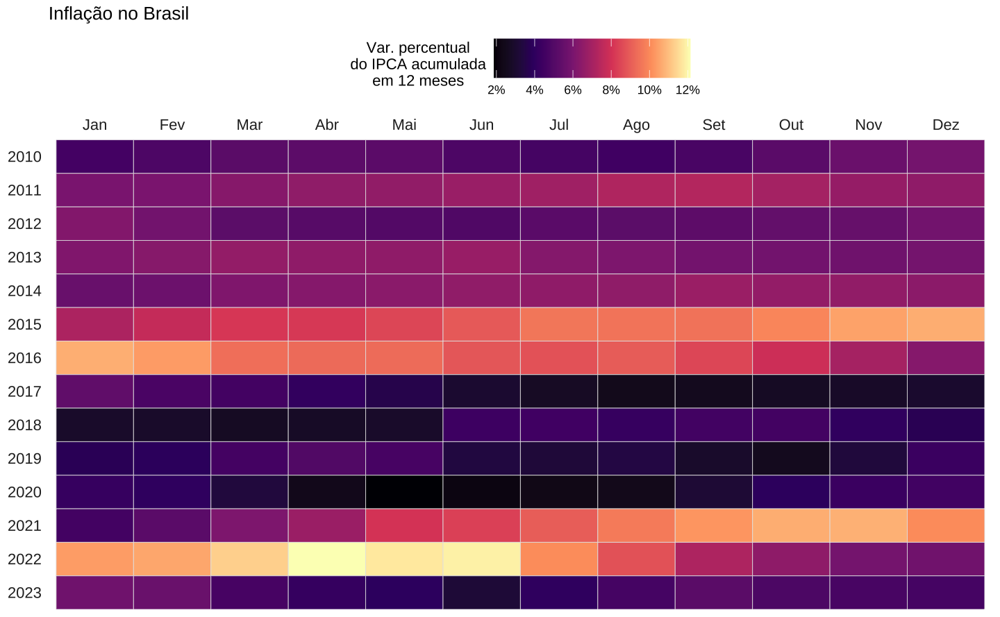
Na visualização vê-se como os anos iniciais de 2010-14 foram marcados por uma inflação moderadamente alta, oscilando entre 4-6%. Em 2015, libera-se os preços administrados, que ficaram artificialmente represados durante o período eleitoral, e a inflação estoura, chegando e depois superando a casa de 10%. Nos anos seguintes, a inflação é mais baixa, caindo até a casa de 2-3%. A quebra da série acontece durante a pandemia, quando a inflação chega a 12% e passa vários meses acima de 10%.
Tecnicamente, vale notar o uso da função scale_x_discrete já que a variável de mês é armazenada como factor. Inverte-se a escala dos anos usando scale_y_reverse, assim os anos vão “de cima para baixo”, na direção mais natural de leitura. Por fim, especifico manualmente os valores de quebras na legenda de cores, dentro da função scale_fill_viridis_c.
Energia elétrica
Pode-se usar mapas de calor para explorar a presença de padrões sazonais nos dados. A visualização abaixo é adaptada do meu post sobre nascimentos no Brasil mas olha para o consumo mensal de energia elétrica. Mais especificamente, a série apresenta o consumo residencial de energia elétrica desde 2002: escolhe-se este ano para evitar o apagão de 2021, que distorceria muito a visualização. Cada quadrado apresenta o consumo do mês, relativamente ao consumo total naquele ano.
Como podia-se imaginar, o consumo de energia é mais elevado nos meses quentes: dezembro, janeiro, fevereiro e março apresentam os maiores valores. Já nos meses de inverno, em contraste, o consumo costuma ser menor. O pico da série aparece em janeiro de 2015, quande houve um verão particularmente quente1.
Code
#> Importa a série de consumo residencial de energia elétrica a partir da
#> API do Banco Central
energia <- GetBCBData::gbcbd_get_series(
id = 1403,
first.date = as.Date("1980-01-01")
)
#> Limpeza de dados
energia <- energia |>
mutate(
mes = lubridate::month(ref.date, label = TRUE, locale = "pt_BR"),
mes = fct_rev(mes),
ano = lubridate::year(ref.date)
) |>
#> Agrupa por ano e calcula o consumo percentual em cada mês relativamente ao ano
group_by(ano) |>
mutate(cons_rel = value / sum(value) * 100) |>
ungroup() |>
#> Começa a série em 2002 para evitar o "apagão" em 2001.
filter(ano > 2002, ano < 2023)ggplot(energia, aes(x = ano, y = mes, fill = cons_rel)) +
geom_tile(color = "gray90") +
scale_x_continuous(breaks = 2001:2022, expand = c(0, 0), position = "top") +
scale_fill_viridis_c(name = "Consumo de Energia\nem relação ao ano (%)") +
theme_heatmap +
theme(
legend.title = element_text(vjust = 0.8),
axis.text = element_text(size = 11, color = "gray15")
)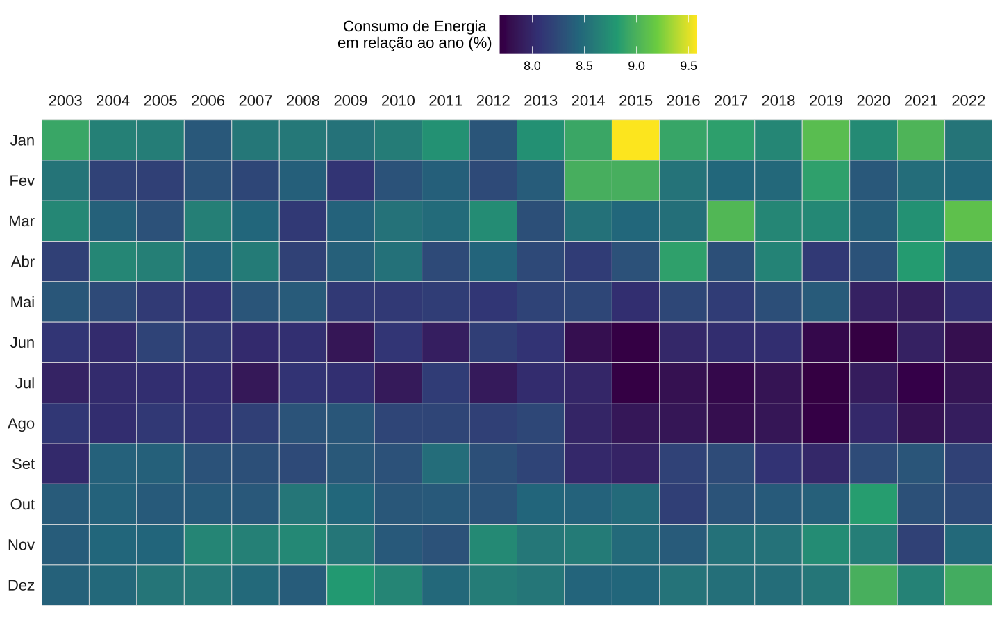
Escala divergente
Outra aplicação de gráficos de calor é de mostrar uma variável num gradiente de cores “divergente”. Um caso comum é quando quer-se mostrar uma variável como um desvio em relação a alguma média. Em geral, há duas possibilidades para visualizar os dados:
- O desvio dos valores em relação à média na “coluna”, isto é, entre os grupos. No caso do mapa de calor do PIB per capita isto seria equivalente a comparar o crescimento dos países (grupo) no mesmo ano.
- O desvio dos valores em relação à média na “linha”, isto é, dentro de um mesmo grupo. Novamente, no caso do mapa de calor do PIB per capita, isto seria equivalente a comparar o crescimento do país num ano em relação ao histórico de crescimento do país.
Não há uma escolha certa ou errada com este tipo de visualização. É preciso saber somente qual tipo de relação que se quer visualizar. Em casos mais simples, a própria variável de interesse pode estar expressa na forma de desvios em relação a alguma média. Por fim, há também casos de variáveis que tem valores padronizados, ou indexados, que funcionam bem com escalas divergentes.
Aquecimento Global
O exemplo abaixo usa a base gtemp_ocean que mensura as “anomalias de temperatura” nos últimos anos. Por anomalia de temperatura, entende-se, o desvio da temperatura média anual em relação à média histórica (1951-1980). Esta visualização é adaptada do meu post Aquecimento Global.
Na visualização, fica evidente que os anos recentes concentram um grande número de “anomalias positivas”, isto é, anos em que a temperatura média esteve acima da média histórica. Este exemplo é bastante simples pois existe apenas um “grupo”, logo, os valores estão representados como desvios em relação à média na “linha”.
# Carrega a base de dados 'gtemp_ocean'
data("gtemp_ocean")
# Converte o objeto para data.frame
df <- data.frame(
ano = as.numeric(time(gtemp_ocean)),
temp = as.numeric(gtemp_ocean)
)
# Monta o gráfico
ggplot(data = df, aes(x = ano, y = 0, fill = temp)) +
geom_tile() +
scale_fill_gradientn(
name = "Percent Deviation\nin relation to\nWorld average",
breaks = seq(-1, 1, 0.25),
colors = rev(met.brewer("Hiroshige")),
) +
theme_heatmap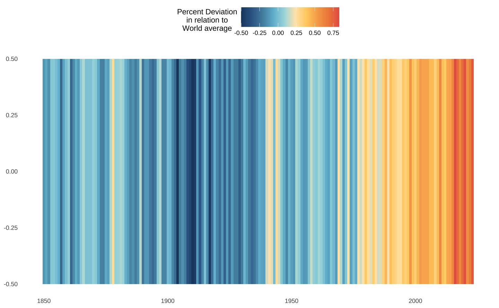
Correlação
A correlação é uma medida da relação linear entre um par de variáveis. Na construção de um modelo linear, ou modelo de regressão de forma geral, é interessante visualizar a relação de correlação entre as variáveis. Por construção, a correlação (de Pearson) é padronizada pelo desvio-padrão das variáveis, logo, varia entre -1 e 1. Uma correlação igual a -1 indica uma correlação negativa “perfeita” e uma correlação igual a 1 indica uma correlação positiva “perfeita”. Se a correlação entre duas variáveis for próxima de 0, não há dependência linear entre as variáveis.
O código abaixo seleciona algumas das colunas da base de dados hprice2 exportada junto com o pacote wooldridge. Esta base contém o preço de alguns imóveis junto de algumas outras variáveis. Para consultar a definição das variáveis use ?hprice2.
Code
dat <- wooldridge::hprice2
#> Seleciona colunas
num_cols <- c("stratio", "dist", "nox", "crime", "rooms", "lprice")
sub <- select(dat, all_of(num_cols))
tbl_cor <- sub |>
#> Calcula matriz de correlação
cor(method = "pearson") |>
as_tibble() |>
#> Converte para longitudinal e adapta variáveis
mutate(name_1 = num_cols) |>
pivot_longer(cols = -"name_1", names_to = "name_2", values_to = "correl") |>
mutate(
name_1 = factor(name_1, levels = num_cols, labels = str_to_title(num_cols)),
name_2 = factor(name_2, levels = num_cols, labels = str_to_title(num_cols)),
correl = if_else(correl == 1, NA_real_, correl)
)O mapa de calor abaixo mostra a correlação entre algumas variáveis. A variável lprice é o logaritmo natural do preço do imóvel. Nota-se que esta variável tem uma correlação positiva com rooms (número de quartos) e dist (distância até polo de emprego). Por outro lado, há uma correlação negativa entre o preço e nox (medida de poluição do ar) e crime (proporção de crimes).
ggplot(tbl_cor, aes(x = name_1, y = name_2, fill = correl)) +
geom_tile() +
geom_text(aes(label = round(correl, 2)), size = 4) +
scale_fill_gradient2(
name = "",
low = colors_hiroshige[1],
high = colors_hiroshige[10],
limits = c(-1, 1),
na.value = "gray90"
) +
guides(fill = "none") +
labs(title = "Correlação entre variáveis") +
theme_heatmap +
theme(axis.text = element_text(size = 12))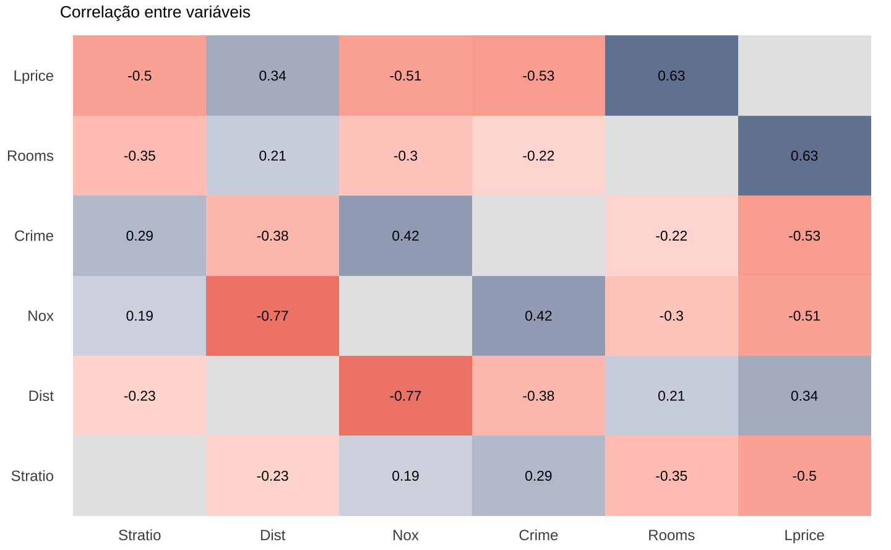
O valor da correlação foi plotado usando geom_text. Como a escala da correlação varia sempre entre -1 e 1, suprime-se a legenda de cores. Para construir a escala divergente utiliza-se scale_fill_gradient2 com a mesma paleta de cores do Met Brewer (Hiroshige). Vale notar que existe um pacote dedicado a este tipo de visualização chamado ggcorplot - para mais detalhes veja o GitHub do pacote.
PIB per capita
Vamos retornar, novamente, ao exemplo do PIB per capita. Restringindo a análise somente à América Latina, há duas maneiras intuitivas de olhar os dados: (1) relativamente ao ano (coluna); (2) relativamente ao país (linha).
No primeiro caso, compara-se a performance entre os países em cada ano: vê-se quais foram os países que cresceram mais ou menos em determinado ano. No segundo caso, compara-se a trajetória de cada país individualmente: fica mais evidente quais foram os anos de maior ou de menor crescimento.
O código abaixo usa a função scale para “normalizar” os dados2.
# Escala os dados em relação ao país
scale_country <- latam |>
group_by(country) |>
mutate(scaled = as.numeric(scale(d_gdppc)))
# Escala os dados em relação ao ano
scale_year <- latam |>
group_by(year) |>
mutate(scaled = as.numeric(scale(d_gdppc)))O primeiro gráfico mostra o crescimento do PIB per capita anual relativamente ao crescimento médio do país. Note como oscila o crescimento da Argentina: anos de crescimento acima da média são imediatamente seguidos por anos de crescimento abaixo da média durante quase toda a sua história.
Já o Brasil parece ter um crescimento mais ao estilo “voos de galinha”, com alguns poucos anos de crescimento excepcionais aglomerados. Vale notar, também, como a presença da Venezuela entre os países acaba distorcendo a escala.
p <- ggplot(data = scale_country, aes(x = year, y = country)) +
geom_tile(aes(fill = scaled)) +
scale_fill_gradientn(
name = "Desvio em relação\nao crescimento\nmédio do país",
breaks = seq(-4, 4, 1),
colours = colors_hiroshige
)
gg_heatmap(p) +
ggtitle("Crescimento relativo ao país")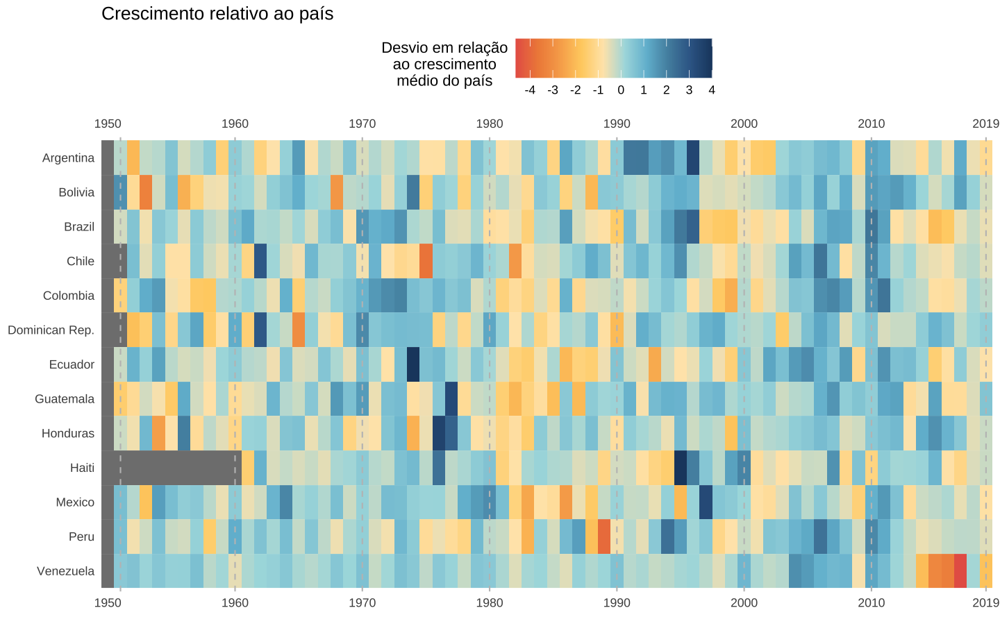
O segundo gráfico mostra o crescimento anual de cada país em comparação com os demais países latinoamericanos. O padrão revela quais países cresceram mais ou menos em cada ano.
De maneira geral, o Brasil parece crescer ligeiramente acima da média da região. A Venezuela, que no gráfico anterior parecia exibir um crescimento relativamente estável ao longo dos anos, agora apresenta um padrão com maior oscilação. Dos anos 2000 em diante, Bolivia, Chile, Colombia e Peru são os países que consistentemente crescem acima da média da região. Novamente o colapso econômico da Venezuela acaba distorcendo a escala de cores.
p <- ggplot(data = scale_year, aes(x = year, y = country)) +
geom_tile(aes(fill = scaled)) +
scale_fill_gradientn(
name = "Desvio em relação\nao crescimento\nmédio de cada ano",
breaks = seq(-4, 4, 1),
colours = colors_hiroshige
)
gg_heatmap(p) +
ggtitle("Crescimento relativo ao ano")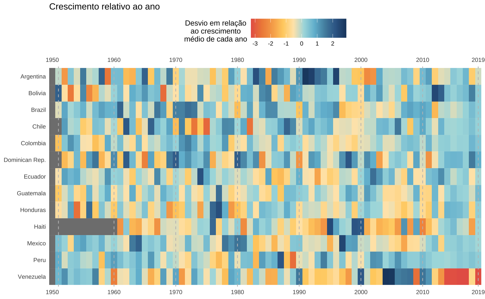
Suponha que seja interessante descobrir quais países estão crescendo acima ou abaixo da média mundial. Para chegar nesta resposta precisa-se primeiro fazer um pouco de manipulação nos dados.
Code
# Calcula o PIB per capita mundial e o seu crescimento
world <- pwt |>
group_by(year) |>
summarise(
gdp = sum(rgdpe, na.rm = TRUE),
n = sum(pop, na.rm = TRUE)
) |>
mutate(
gdppc_world = gdp / n,
d_gdppc_world = gdppc_world / lag(gdppc_world) - 1
) |>
select(year, gdppc_world, d_gdppc_world)
# Calcula a razão do PIB per capita local x mundial e o desvio do
# crescimento do PIB per capita em relação à média mundial
#
latam_scaled <- latam |>
left_join(world, by = "year") |>
mutate(
scaled = gdppc / gdppc_world * 100,
deviation = (d_gdppc - d_gdppc_world) / d_gdppc_world
)
# Trunca os outliers para melhorar a visualização
outlier <- boxplot.stats(latam_scaled$deviation)$stats[c(1, 5)]
latam_scaled <- latam_scaled %>%
mutate(
deviation_trunc = if_else(deviation > 5, 5, deviation),
deviation_trunc = if_else(deviation < -5, -5, deviation_trunc)
)Após a manipulação de dados acima, pode-se visualizar o crescimento da América Latina em relação ao resto do mundo. O primeiro gráfico abaixo mostra o desvio percentual do crescimento doméstico em relação à média mundial naquele ano.
Vê-se como, de maneira geral, os países latino-americanos tiveram dificuldades para acompanhar o resto do mundo nos anos 1980. Além disso, a maior parte dos países parece ficar próxima ou abaixo da média. A exceção é durante o começo dos anos 1990 e os anos do boom de commodities (2000-2012). Além disso, vê-se como a recessão brasileira de 2015-17, apesar de ter sido influenciada por uma leve desaceleração global, foi majoritariamente uma crise interna.
p <- ggplot(data = latam_scaled, aes(x = year, y = country)) +
geom_tile(aes(fill = deviation_trunc), height = 0.8) +
scale_fill_gradientn(
name = "Percent Deviation\nin relation to\nWorld average",
breaks = seq(-5, 5, 1),
colors = met.brewer("Hiroshige")
)
gg_heatmap(p)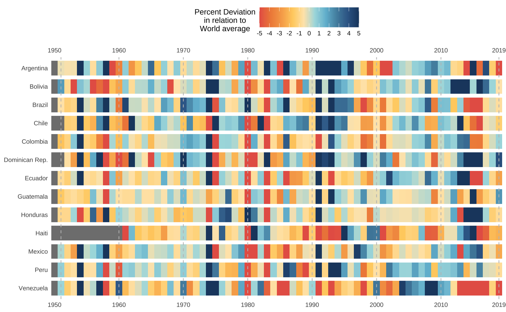
Resumo
Mapas de calor de clusters são uma visualização interessante e versátil. Este tipo de visualização permite detectar padrões e tendências nos dados de maneira bastante intuitiva. Nos exemplos vimos como encontrar padrões sazonais, macrotendências entre grupos e até correlações entre variáveis. Este tipo de visualização parece estar ganhando mais popularidade recentemente, mas ainda é subutilizada.
A escolha da escala de cores é particularmente importante neste tipo de gráfico: a depender das cores pode ser difícil verificar pequenas variações no valores, sobretudo, se os valores estiverem adjacentes no gráfico. Neste sentido, o mapa de calor de clusters não é apropriado quando se quer ver pequenas variações nos dados. Além disso, pode ser necessário testar várias paletas de cores alternativas até chegar num resultado satisfatório.
Posts relacionados
Footnotes
Vale reforçar que este não foi o pico absoluto de consumo de energia no país: os dados representam o consumo percentual de energia em relação ao total de energia consumida no ano.↩︎
O termo “normalizar” é um tanto abusado hoje em dia, em contextos estatísticos. A função
scalesubtrai cada valor pela sua média e divide o resultado pelo desvio padrão.↩︎